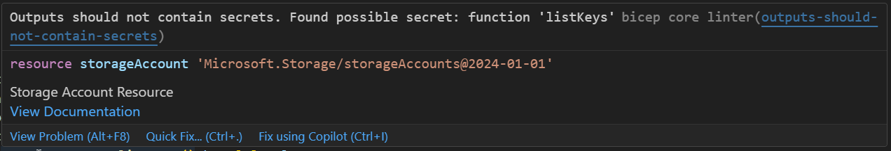

Published on: 2025-03-14
Patterns and Practices
Estimated time to read: 7 minutes
This is an aggregation of information from Microsoft and other sources, as well as my own observations/thoughts.
General
Be mindful of Bicep's intent and capabilities
Bicep's core capability is to declare Azure infrastructure. It's syntax is simple. By it's nature and capabilities, it shouldn't be using fancy tricks or complicated logic. Attempting to do so also adds cognitive effort to interpret the resulting infrastructure such a Bicep file might create.
Resource vs Module vs Verified Module Behaviors
One of the nice features of Bicep is being able to reference properties of one resource in another reason. This allows us to easily and securely pass values between the resources where a relationship may exist. A very common example of this is Function Apps, which rely on a Storage Account to store state and other data. When the resources are coded as plain Bicep resources, this is easy to achieve:
@description('Storage Account Resource')
resource storageAccount 'Microsoft.Storage/storageAccounts@2024-01-01' = {
name: storageAccountName
location: location
sku: {
name: storageAccountSku
}
kind: storageAccountKind
properties: {
supportsHttpsTrafficOnly: true
minimumTlsVersion: 'TLS1_2'
}
}
@description('Function App Resource')
resource functionApp 'Microsoft.Web/sites@2024-04-01' = {
name: functionAppName
location: location
kind: 'functionapp'
properties: {
siteConfig: {
appSettings: [
{
name: 'AzureWebJobsStorage'
value: 'DefaultEndpointsProtocol=https;AccountName=${storageAccount.name};AccountKey=${storageAccount.listKeys().keys[0].value};EndpointSuffix=core.windows.net'
}
{
name: 'FUNCTIONS_WORKER_RUNTIME'
value: 'dotnet'
}
]
}
serverFarmId: functionAppServicePlan.id
httpsOnly: true
clientAffinityEnabled: false
clientCertEnabled: false
}
}
As shown in the example, the Function App has a setting called AzureWebJobsStorage that references both the Storage Account's name property and it's access key.
If a module is used for the Storage Account, the listKeys Resource function is no longer available. It is possible to define outputs in the module for the Function App to reference, such as the name using the format `

This is an issue because inputs and outputs are stored in the details of Deployments, meaning a user with read permission could potentially access the values. In this situation there is a workaround, having the module output the resourceId and then use that value to safely lookup the keys.
With Azure Verified Modules (AVM), the approach is more structured. AVMs have an approach where secrets are saved to a defined keyvault. These values can then be referenced by other resources. This is an approach that can work for regular modules but adds additional resources to manage.
Convention over Configuration
Convention over Configuration is a software design concept aimed at reducing the number of decisions or inputs required to do something. It partners well with Infrastructure provisioning and Infrastructure as Code because we often create rules for how resources should be, such as their name and other characteristics. Using resource naming as an example, if your organisation has a defined naming standard similar to that mentioned in their documentation, it is possible to construct the names (ie. use a convention) rather than have their hard-coded (ie. they become an item in configuration)
Resource Naming Considerations
This item is less about Bicep and more about general naming conventions. Many Azure resources provide generous sizing for names, with many allowing up to 64 characters. Some even exceed this. However, some resources have very small naming lengths. Some of these include:
- Windows virtual machines and scale sets are limited to 15 characters
- Several resources types such as Elastic SANs, Storage Accounts and Key Vaults are limited to 24 characters
With this in mind, careful consideration needs to be given to the components that make up the naming convention you use. An extra complication in this issue is Microsoft's own recommended naming convention includes the full region name. For Australian regions, this results in a very long value. There is also not a standard set of abbreviations. Jed Laundry's list of different abbreviations. Jed recommends using the Terraform CAF short names, which results in most regions being 2 or 3 characters.
Similarly for the environment value, it may help to adopt a shortened form of the environment name, such as TST instead of TEST to save on characters. For the workload/application/project part of the resource name, adopting an abbreviated form can also help. More verbose information can be reflected in tagging applied to the resources.
Authoring
Use a consistent entry point file name
Depending on the complexity of the system you are writing Bicep for and how you lay out the repository, there may be many folders and/or services defined in code. To make it clearer where the start point is for others, use a consistent entry point file. Based on what is in Microsoft's numerous Bicep repositories, Microsoft has landed on using main.bicep as that starting point.
Bicep File Structure
Bicep files have a number of Elements that it can contain. The ordering of these should follow a consistent pattern so it's easy to find different pieces. These Elements are:
- Parameters (
param) - values supplied for use in deployment, either via parameter files or command-line parameter values - Variables (
var) - can be combined with Parameters, other Variables and Functions to create values. A common use case is resource names - Resources (
resource) and/or Modules (module) - The actual resource definitions or modules - Outputs (
output) - Values resulting from deployed resources - Functions (
func) - Custom functions that you have created (as opposed to built-in functions) - Types (
type) - Custom types that you have created
The consistent pattern that Microsoft seems to use mimics the ordering of the items in the list above.
Parameters
As Microsoft's Bicep documentation notes:
"parameters are for values that need to vary for different deployments"
Common use cases for "different deployments" are deploying to different environments (ie. DEV, TEST, PROD) to different regions. On that basis, the parameters should give coverage on those values. Going all the way back to ARM templates, the recommendation at the time was to keep parameters to a minimum as well.
Parameters have a number of decorators that can apply constraints or metadata to the parameter. For example, the maximum length can be set as a constraint. This can be useful in creating an early failure gate.
Testing
Use a Testing Pipeline
Applying software development practices to IaC, we would want to have a testing pipeline that acts as a quality gate between authoring Bicep code and deploying it. The Testing Pyramid concept can be applied here, where fast tests that catch the most issues are run first (leading to a "fail fast" outcome) with slower, more complicated tests (such as end-to-end testing) being run later in the process. Applying this concept to Bicep, I've used test pipelines similar in design to the diagram below:
graph LR
A[Linting] --> B[Quality Check] --> C[What-if Check] --> D[Test Deploy]Linting Test
Bicep has a built-in linter that can check for syntax errors. It also checks for "best practice violations". It is part of the functionality in VS Code if the Bicep extension is installed. It can also be invoked via the Bicep CLI
Quality Check
Ideally, the infrastructure deployed from Bicep code should align with the pillars of the Well-Architected Framework (WAF), meaning it should be secure, resilient and scalable. The PSRule tool can access Bicep and ARM templates against rulesets. It has an included ruleset for assessing against the WAF. Below is sample output of the tests run against a Storage Account
-> func5c1d59a24b601storage : Microsoft.Storage/storageAccounts [9/9]
[PASS] Azure.Resource.UseTags (AZR-000166)
[PASS] Azure.Resource.AllowedRegions (AZR-000167)
[PASS] Azure.Storage.BlobAccessType (AZR-000199)
[PASS] Azure.Storage.Name (AZR-000201)
[PASS] Azure.Storage.Defender.MalwareScan (AZR-000384)
[PASS] Azure.Storage.Firewall (AZR-000202)
[PASS] Azure.Storage.MinTLS (AZR-000200)
[PASS] Azure.Storage.SecureTransfer (AZR-000196)
[PASS] Azure.Storage.BlobPublicAccess (AZR-000198)
PSRule results can also be exported to various formats. Some of these formats can then present in the Tests tab in Azure DevOps Pipeline executions.
What-if Check
Bicep has a a what-if command that provide a preview of the changes that will occur if the Bicep file is deployed. This is similar to Terraform's plan command. While it gets a bit closer to determining whether a Bicep file will deploy correctly, it's not totally accurate. There's a gap between what the what-if command will report and what actually happens during deployment.
Test Deployment
Even with all the previous steps, there are times when a real deployment of Bicep code can fail. By doing a test deployment, you can get a heads up on the potential issues. Ideally, the test deployment should be ephemeral, existing only for moments (for a variety of resources, including cost savings). There may be value in keeping it available in the event of a failed deployment to aid in troubleshooting.
Deploying
Use Versioned Artifacts for Deployments
Deploying directly from the main branch in software development is generally considered a bad practice. This is because the main is in a state of flux, changing as content is merged into it. The version of main branch code that was deployed last week might be radically different from the version that exists today. This makes rolling back to a known safe state difficult if issues do arise.
At the end of the Testing Pipeline, it's easy to implement a task that creates an artifact. This artifact is versioned and would represent a definitive version of Bicep code that passed tests. These artifacts can then be used for deployment. If problems do happen, the last version to successfully deploy can be easily used to roll back.
Use Approval Gates for Higher Environments
With Classic Release Pipelines in Azure Devops, it is very easy to add approval gates to a release stage.
Use Unique Names for Deployments
If a Bicep deployment is executed using the command-line tools, it will use a deployment name that defaults to the same name as the Bicep file. So a main.bicep file will create deployments called main. This behaviour will meant that past deployment details will be overwritten by the most recent one.
If the ARM Template deployment task in Azure DevOps is used to perform Bicep deployments, it will use a generated name that includes the Bicep file. This ensures the deployments should have unique names and the deployment details are preserved.